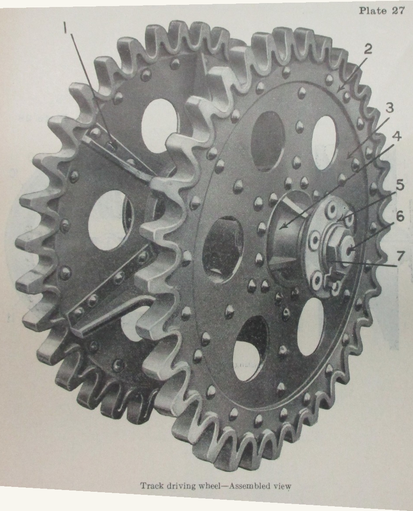
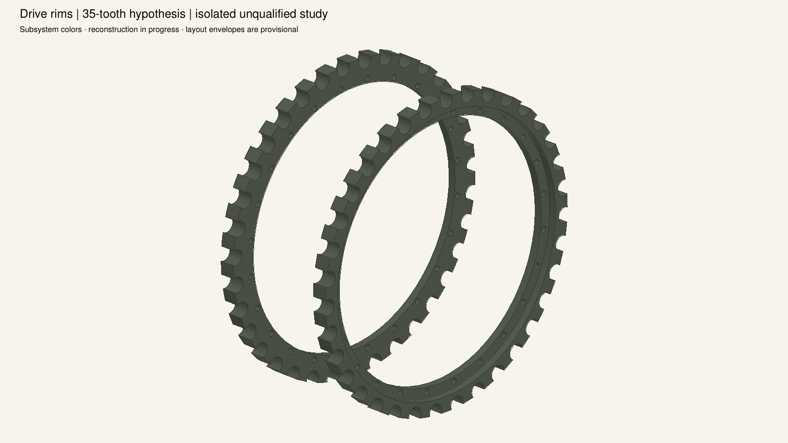
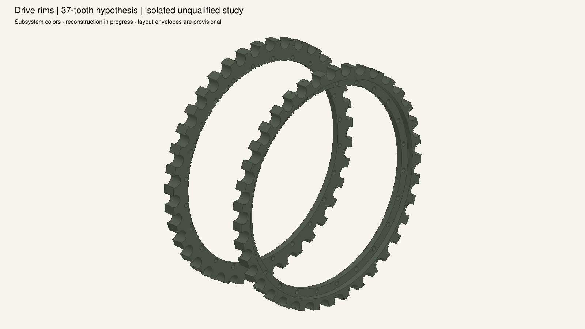
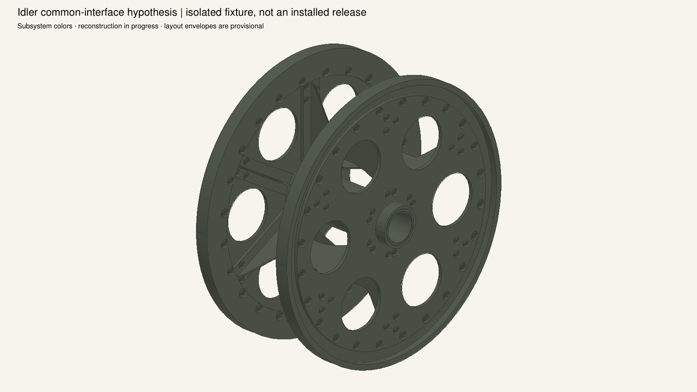
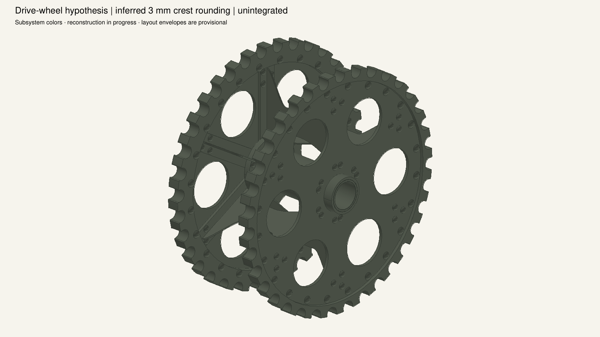
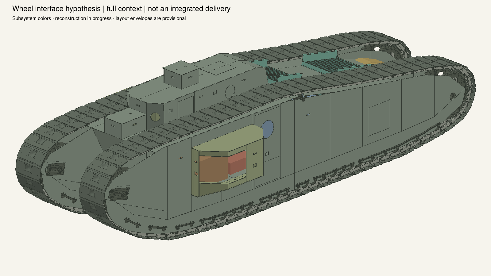

Original HB130/133 print 35 teeth; HB119 prints a 9:37 reduction. Both hypotheses below clear the current assembly at eight sampled phases, but overlap the current shared disk geometry. Clearance does not qualify engagement or settle the source conflict.



Scope and limitations · Native checks and hashes · Next implementation work
The first disk/land trial is rejected: it intersects diaphragm ends and short rivets. The revised common disk and diaphragm fit both wheel families without internal overlaps. These inferred dimensions are still outside the accepted tank model.



The four unrounded candidate wheels clear all 1,626 material pairs in the installed audit. Subsequent crest rounding only removes material and preserves the disk bearing faces. Drive shafts/supports and roller-pinion engagement remain absent. This image is an experimental context view; the qualified tank and progression snapshots are separate.
Common interface report · Installed audit · Rounding and native subset check